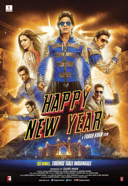
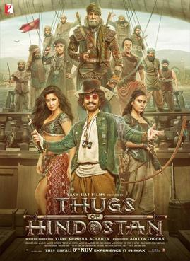

Releasing Date: December 22, 2017
Tiger Zinda Hai (Tiger Lives) is a 2017 Indian Hindi-language action thriller film written and directed by Ali Abbas Zafar based on a story by Zafar and Neelesh Misra. It is produced by Aditya Chopra under Yash Raj Films. The film is a sequel to Ek Tha Tiger (2012) and is the second instalment in the YRF Spy Universe. The film stars Salman Khan and Katrina Kaif reprising their roles from the predecessor. The film takes place after the events of Ek Tha Tiger in which Tiger and Zoya come out of hiding to save nurses held hostage by a terrorist organisation called ISC in Iraq.
A sequel was conceived following the success of Ek Tha Tiger, however, faced several delays after the writer and director of the first film Kabir Khan refused to return for a sequel. Zafar was subsequently hired as the writer and director. The story is inspired from the 2014 abduction of Indian nurses by ISIL. Production begun for the film in 2016, and filming was concluded by 2017. Filming locations include Abu Dhabi, Austria, Greece, and Morocco. Made on a budget of ₹120-130 crore (US$−19,962,652.64), the film was one of the most expensive Hindi films ever made at time of its release.
Tiger Zinda Hai was theatrically released worldwide by Yash Raj Films on 22 December 2017. The film received positive reviews from critics.
Similar to its predecessor, the film set numerous box-office records during its theatrical run, grossing over ₹565 crore (US$86.76 million) worldwide,[13] becoming the third highest-grossing Indian film of 2017. At the 63rd Filmfare Awards, the film won for Best Action
Read more about movie of Tiger Zinda Hai

Releasing Date: July 25, 2014
Kick is a 2014 Indian Hindi-language action comedy film produced and directed by Sajid Nadiadwala in his directorial debut under the Nadiadwala Grandson Entertainment banner and starring Salman Khan, Jacqueline Fernandez, Randeep Hooda and Nawazuddin Siddiqui in the lead roles. An official remake of the eponymous 2009 Telugu original, it was made in collaboration with UTV Motion Pictures on a reported budget of ₹55 crore (US$6.6 million).
Rajat Arora scripted the film, apart from giving the screenplay alongside Nadiadwala, Chetan Bhagat and Keith Gomes. Released on 25 July 2014 coinciding with Eid, Kick grossed over ₹402 crore (US$48 million) worldwide and over 232 crores net domestically in India, becoming a blockbuster success and emerged as Khan's first film to enter 200 Crore Club and emerged as one of the biggest blockbusters of 2014. [2] The film received mixed to positive reviews with praise for the humor, the performances and soundtrack. A sequel named Kick 2 with the same cast & crew is under development
Read more about movie of Kick
_Official_release_poster.jpg)
Releasing Date: October 24, 2014
Happy New Year (sometimes abbreviated as HNY) is a 2014 Indian Hindi-language action comedy film[5] directed by Farah Khan and produced by Gauri Khan under the banner of Red Chillies Entertainment. The film features an ensemble cast of Deepika Padukone, Shah Rukh Khan, Abhishek Bachchan, Sonu Sood, Boman Irani, Vivaan Shah and Jackie Shroff. It was distributed worldwide by Yash Raj Films.[6] In the film, a bunch of losers transform themselves into a team that wins over the hearts of the people in the city and across the world, all as part of their quest to pull off the biggest diamond heist ever seen.
Made on a total budget of ₹140 crore (US$22.94 million), the film marked the third collaboration of the lead actor, producer and director; they previously worked on Main Hoon Na (2004) and Om Shanti Om (2007), the latter of which also featured Padukone as the female lead
Happy New Year was released on Diwali 2014 with dubbed versions in Tamil and Telugu, and gained around 4,200 screens in Hindi and 800 screens in Tamil and Telugu, that was the biggest film release in India up until then. It received negative reviews from critics, who appreciated the cast performances, soundtrack, humor, cinematography, production design and visual effects, but criticized the writing, length and pace. It grossed ₹44.97 crore (US$7.37 million) in India on its opening day which was the record for the highest domestic opening for an indian film at that time and eventually grossing a total of ₹408 crore (US$66.85 million) worldwide. Despite negative reviews, it became a huge success.
Read more about movie of Happy New Year
Releasing Date: December 25, 2009
3 Idiots is a 2009 Indian Hindi-language coming-of-age comedy-drama film written, edited and directed by Rajkumar Hirani, co-written by Abhijat Joshi and produced by Vidhu Vinod Chopra. Adapted loosely from Chetan Bhagat's novel Five Point Someone, the film stars Aamir Khan, R. Madhavan and Sharman Joshi in the titular roles, marking their reunion three years after Rang De Basanti (2006), while Kareena Kapoor, Boman Irani and Omi Vaidya appear in pivotal roles. Narrated through two parallel dramas, one in the present and the other set ten years in the past, the story follows the friendship of three students at an Indian engineering college and is a satire about the social pressures under the Indian education system
Produced by Chopra under the banner Vinod Chopra Films, 3 Idiots incorporated real Indian inventions created by Remya Jose, Mohammad Idris, Jahangir Painter and Sonam Wangchuk, the latter of whom also inspired Khan's character.
Upon its release on 25 December 2009, 3 Idiots received widespread critical acclaim with praise directed towards its direction, themes, humour, story, screenplay, soundtrack and performances of the cast and was a commercial success. It was also the highest-grossing film in its opening weekend in India, had the highest opening day collections for an Indian film up until that point, and also held the record for the highest net collections in the first week for a Hindi film. Eventually, it became one of the few Indian films at the time to become successful in East Asian markets such as China[15] and Japan, eventually bringing its worldwide gross to ₹460 crore ($90 million) — it was the highest-grossing Indian film ever at the time until 2013 and the highest grossing Indian film of the 2000s.
At the 57th National Film Awards, 3 Idiots won 3 National Film Awards, including Best Popular Film Providing Wholesome Entertainment. Additionally, the film received 11 nominations at the 55th Filmfare Awards, including Best Actor (Khan), Best Actress (Kapoor) and Best Supporting Actor (Madhavan and Joshi), and won a leading 6 awards (tying with Dev.D), including Best Film, Best Director (Hirani) and Best Supporting Actor (Irani). Overseas, it won the Grand Prize at Japan's Videoyasan Awards,[19][20][16] while it was nominated for Best Outstanding Foreign Language Film at the Japan Academy Awards[21][22] and Best Foreign Film at China's Beijing International Film Festival.
Read more about movie of 3 Idots

Releasing date: 14 December 2007
Taare Zameen Par (lit. 'Stars on Earth'), also known as Like Stars on Earth in English, is a 2007 Indian Hindi-language psychological drama film produced and directed by Aamir Khan. It stars Khan himself, with Darsheel Safary, Tanay Chheda, Vipin Sharma and Tisca Chopra. It explores the life and imagination of Ishaan (Safary), an artistically gifted 8-year-old boy whose poor academic performance leads his parents to send him to a boarding school, where a new art teacher Nikumbh (Khan) suspects that he is dyslexic and helps him to overcome his reading disorder.
Creative director and writer Amole Gupte developed the idea with his wife Deepa Bhatia, who was the film's editor. Shankar–Ehsaan–Loy composed the score, and Prasoon Joshi wrote the lyrics for many of the songs. Principal photography took place in Mumbai, and in Panchgani's New Era High School, where some of the school's students participated in the filming.
Taare Zameen Par made its theatrical debut in India on 21 December 2007. It was commercially successful, earning ₹98.48 crore gross worldwide.[3] It received widespread critical acclaim, with praise for its story, screenplay, direction, dialogues, soundtrack, and performances. It also helped raise awareness about dyslexia.
A recipient of several accolades, Taare Zameen Par was India's official entry at the 81st Academy Awards for Best Foreign Film, but was not nominated. At the 55th National Film Awards, it won 3 awards: Best Film on Family Welfare, Best Lyrics (Prasoon Joshi for "Maa") and Best Male Playback Singer (Shankar Mahadevan for "Maa"). At the 53rd Filmfare Awards, it received 11 nominations, including Best Actor (Safary), Best Supporting Actor (Aamir Khan) and Best Supporting Actress (Chopra), and won a leading 5 awards, including Best Film, Best Director (Aamir Khan) and Best Lyricist (Joshi for "Maa")
Read more about movie of Taare Zameen Par

Releasing date: 8 November 2018
Thugs of Hindostan is a 2018 Indian Hindi-language period action-adventure film written and directed by Vijay Krishna Acharya, and produced by Aditya Chopra under his banner Yash Raj Films. The film stars Amitabh Bachchan, Aamir Khan, Katrina Kaif, Fatima Sana Shaikh, Mohammed Zeeshan Ayyub, Ronit Roy, and Lloyd Owen. Set during the period of Company rule in India, the film follows a small-time thug from Awadh, Firangi Mallah, who is sent by an East India Company official to infiltrate and counter a band of thugs
Produced at an estimated budget of ₹200 crore (US$29.24 million)–₹300 crore (US$43.87 million),[10] Thugs of Hindostan is one of the most expensive Bollywood films.[11] Initially titled Thug, the film marked the first time Khan and Bachchan featured together as leads, and was the second collaboration between Khan, Acharya and Kaif, after Dhoom 3 (2013), and between Khan and Shaikh after the latter's debut in Khan-produced Dangal. Principal photography commenced on 5 June 2017 in Malta; the film was also shot in Thailand, Morocco and Mehrangarh. It was put on a short hiatus after Bachchan was injured on set. Filming concluded in March 2018, the final schedule being completed in Rajasthan. The soundtrack was composed by Ajay–Atul, with lyrics written by Amitabh Bhattacharya, while John Stewart Eduri composed the background score.
Thugs of Hindostan was released during the week of the Diwali festival, on 8 November 2018. It received generally negative reviews from critics and audiences, with praise towards the performances of Bachchan and Khan but received criticism towards Acharya's direction, screenplay, story and performances of the supporting cast. The film recorded the highest first-day collection and highest two-day collection for any Hindi film in India, and the fourth biggest opening weekend in India, but immediately experienced a significant drop in the second day itself.[12] The film released in China on 28 December 2018, where a special edition edited by Aamir Khan was released with a shorter run-time than the original version.[13] Thugs of Hindostan has grossed ₹335 crore ($45 million) at the worldwide box office,[14] becoming the 51st highest grossing Indian film of all time.
Read more about movie of Thugs of Hindostan
